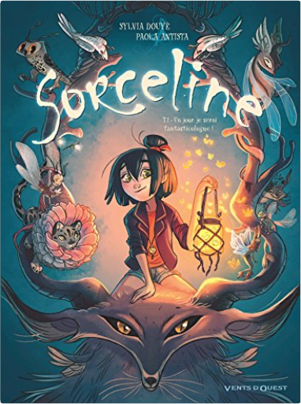

Books
Movies
Albums
Videogames
Games
BD
BD Camille
Blu-ray
Business
Camille
Comics
Cooking
Lego
Manga
Pauline
Photography
Star Wars
T'choupi
Travel
TV Shows
Un livre dont vous êtes le héro
Vinyl
Walt Disney
1
2
les carnets de cerise, tome 2 - le livre d'hector
joris chamblain, aurélie neyret

sorceline, tome 1 : un jour je serai fantasticologue !
syvlia douyé, paola antista
sorceline, tome 2 : la fille qui aimait les animonstres
syvlia douyé, paola antista
sorceline, tome 3 : au coeur de mes zoorigines
syvlia douyé, paola antista
sorceline, tome 4 : rêve et cauchemort !
syvlia douyé, paola antista
bergères guerrières, tome 1 : la relève
jonathan garnier, amélie fléchais
bergères guerrières, tome 2 : la menace
jonathan garnier, amélie fléchais
bergères guerrières, tome 3 : le périple
jonathan garnier, amélie fléchais
il était une fois la vie, tome 2 - le cerveau
jean-charles gaudin
monsieur blaireau et madame renarde, tome 6 : le chat sauvage
brigitte luciani, eve tharlet
à cheval ! tome 1 - hip hippique, hourra !
laurent dufreney & miss prickly
à cheval ! tome 2 - qui s'y frotte s'hippique !
laurent dufreney & miss prickly
1
2


 Made with Delicious Library Made with Delicious Library
Made with Delicious Library Made with Delicious Library